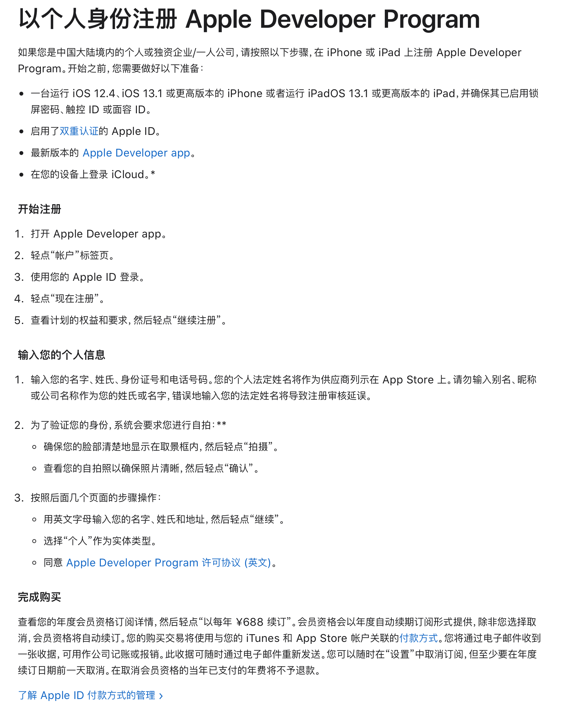

Safari Dark Mode Web Extension
~-~> 2020-12-06
目前对各网站的支持情况
| Web Site | Supported |
|---|---|
| baidu | √ |
| bing | √ |
| √ | |
| github | √ |
| gitee | √ |
| stackoverflow | √ |
| apple | X |
开发过程
- 看完教程之后，我先创建了一份 cn_zh 的本地化文件，成功改掉了默认的插件名称。
- 接着设计总体架构：
- background.js 维护当前是否需要反转颜色（没错，我只是在反转颜色），因为 swift 经验比较少，又是给自己用，就没有纠结给 native 通信。
- content.js 首先与 background.js 通信，在启用反转的情况下，立刻反转页面颜色。具体的反转方法后面细说。
- popup.js 第一步也是与 background.js 通信，获取启用状态并以合适的 UI 显示出来；同时，通过一个按钮来切换启用状态，并通过 background.js 间接地调用 content.js 里反转的逻辑。
- 最终设计反转算法。经历了多次迭代，以及将单文件代码拆分模块，最终设计了两级反转算法（在默认级别失效后，启动降级操作）：
- 默认级别是通过
document.styleSheets更改CSSStyleDeclaration当中的颜色部分（注：由于CSS3变量的存在，所以这里的更改是针对属性值的）。 - 降级后，深度优先后序遍历页面所有节点，通过计算
getComputedStyle获取CSSStyleDeclaration，将color,background-color反转后，写入元素内联style属性（注：没错，既然是降级，边框和渐变色就顾不上了，而且伪元素本来也遍历不到）。 - 降级的条件：首先遇到不合法的
CSSStyleSheet时，会根据href用跨域方式重试。如果此方法依然不行，就采取降级方式。
- 默认级别是通过
发布过程
因为穷，玩不起。既没有苹果手机，也交不起会费。

只好在最后线上开源链接，希望有人能一起研究、改进。
⚠️ 请先安装一款邮件软件（部分浏览器可能不支持，请使用设备默认浏览器打开本页面）